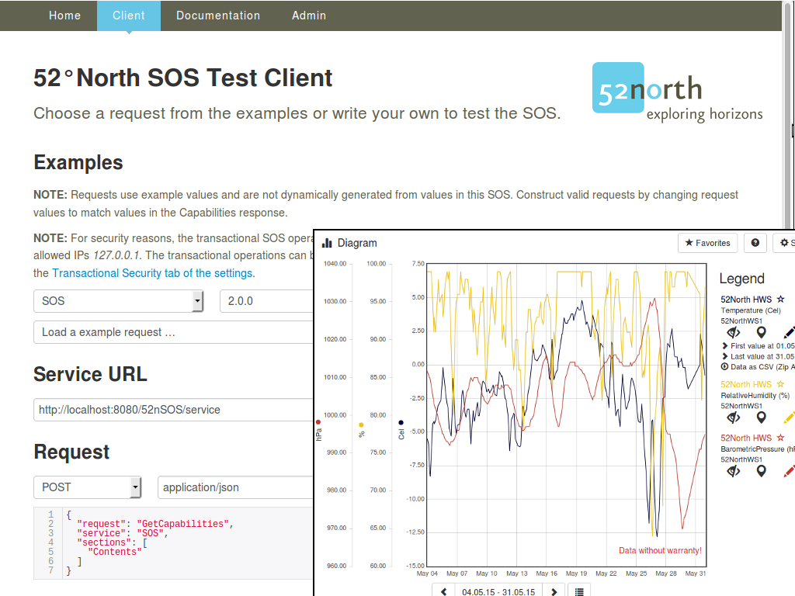

52 North SOS¶
Acerca de¶
El 52°North Sensor Observation Service (SOS) admite la provisión interoperable de datos de observación de sensores vivos y archivados. Un sensor podría ser un medidor de nivel de agua en una corriente, una estación meteorológica o una estación de monitoreo de calidad del aire.
{kind=link}
Características Principales¶
Browser Client: El SOS se entrega con una aplicación basada en navegador. Esto proporciona medios para la administración y configuración de la instancia de servicio, así como el envío de solicitudes de prueba para operaciones SOS; Se incluyen solicitudes de muestra apropiadas.
Helgoland: SOS contiene la aplicación de Helgoland applicationpara la exploración, análisis y visualización de datos de Sensor Web en varios campos de uso, por ejemplo, hidrología, meteorología, mnitoreo ambiental, gestión de de tráfico.
Specifications: El 52°North SOS implementa la especificación actual versión 2.0.0 y la anterior, 1.0.0 (aquí no hay operaciones transaccionales). Las operaciones implementadas para cada versión estándar se enumeran a continuación.
INSPIRE Extensión de Servicio de Descarga: Comenzando con la Versión 4.2.0, una extensión disponible permite que el SOS se utilice como un servicio de descarga INSPIRE. La información de fondo es proporcionada en un blog post y en la wiki .
La Extensión de Reporte electrónico sobre Datos de Calidad del Aire: Comenzando con la Versión 4.3.0, está disponible una extensión que proporciona los Datos sobre Calidad de Flujo de Aire E1a, E1b y E2a (la instancia en OSGeoLive no está configurada en consecuencia). La instalación y configuración está documentada en el Wiki de 52°North.
Sensor Web REST-API: Comenzando con la Versión 4.1.1., una versión del paquete disponible, proporciona directamente la RESTful API. Por lo tanto, los datos de observación pueden solicitarse en forma de RESTful y son devueltos en respuestas codificadas JSON. Más detalles, incluyendo la documentación, pueden encontrarse en la SOS webapp.
INSPIRE Specialized Observations: Support for the INSPIRE Specialized Observations defined in Guidelines for the use of Observations & Measurements and Sensor Web Enablement-related standards in INSPIRE (D2.9) (detailed information about the implementation).
Filtración de Resultados: Soporte para la filtración de observaciones (GetObservation) e información sobre disponibilidad de datos (GetDataAvailability) por el valor de la obsevación.
Leer más: Detalles de las funcinalidades implementadas pueden encontrarse en la Wiki de 52°North .
El desarrollo de esta versión de 52°North SOS fue apoyado por distintos proyectos, organizaciones y personas. Más detalles en 52°North SOS client.
Nos gustaría agradecer a la Agencia Ambiental Interregional Belga (IRCEL - CELINE) por proporcionar los datos de demostración utilizados en esta instalación de SOS. Estos datos de demostración se publican bajo una licencia CC BY 3.0.
Operaciones SOS¶
Consultas:
GetCapabilities: para solicitar una auto descripción del servicio.
DescribeSensor: para solicitar información sobre el sensor.
GetFeatureOfInterest / GetFeatureOfInterestTime (desde 1.0): para solicitar características (e.g. localizaciones y medición del sensor).
GetObservationById / GetObservation: para la solicitud de observaciones.
GetResult (desde la especificación de la versión 2.0): para solicitar los datos del sensor.
GetResultTemplate (desde la especificación de la versión 2.0): para solicitar una plantilla de la estructura del resultado que devolverá una solicitud GetResult.
GetDataAvailability (de Perfil Hidrológico de SOS 2.0 Hydrology Profile - Mejores prácticas OGC): para solicitar la disponibilidad de datos para ciertas configuraciones.
Transacciones:
InsertSensor (desde la especificación de la versión 2.0): para insertar metadatos de nuevos sensores.
InsertObservation (desde la especificación de la versión 2.0): para la inserción de nuevas observaciones.
UpdateSensorDescription (desde la especificación de la versión 2.0): para la actualización de la descripción de un sensor.
DeleteSensor (desde la especificación de la versión 2.0): para eliminar un procedimiento de sensor y todos los relacionados con ofertas y observaciones.
DeleteObservation (desde la especificación de la versión 2.0): para eliminar una observación.
InsertResultTemplate (desde la especificación de la versión 2.0): para insertar una plantilla de resultado.
InsertResult (desde la especificación de la versión 2.0): para insertar resultados.
InsertFeatureOfInterest o Insertar característica de interés, para la inserción de características
DeleteResultTemplate para la eliminación de resultTemplates por identificador o pares de oferta/observedProperty
Dentro de estas operaciones, según sea el caso, los siguientes operadores de filtro son posibles:
Filtro espacial: BBOX, utilizando un cuadro delimitador.
Filtro temporal: durante, con período de tiempo.
Filtro temporal: TEquals, con el tiempo instantáneo.
Estándares implementados¶
Detalles¶
Sitio Web: https://52north.org/software/software-projects/sos
Licencia: GNU General Public License (GPL) version 2
Versión de software: 4.4.3
Plataformas compatibles: GNU/Linux, Mac OSX, MS Windows
Admite versiones de Java: 7 +, (versión del paquete: 8 +)
DBMS Soportados: PostgreSQL (9+) + PostGIS (2+), MariaDB y MySQL (5.6+), Oracle DB (9+), SQL Server 2012
API: Java, HTTP + JSON/XML/SOAP/KVP
Soporte Comercial: https://52north.org/services/
Soporte Comunitario: https://list.52north.org/mailman/listinfo/sensorweb
Sitio Web Comunitario: https://52north.org/research/research-labs/sensor-web/
Otros poryectos 52°North en OSGeoLive: WPS